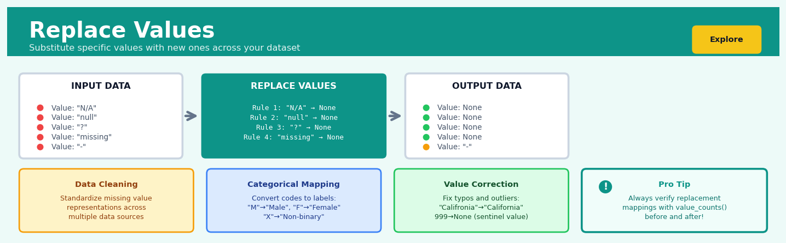

Replace Values#


The most common mistake I see is forgetting that replace operations are often case-sensitive and exact-match only, so "NA" won't catch "na" or " NA " with whitespace. Always strip and standardize your strings first, or you'll end up with a false sense of security thinking you've cleaned all your missing values when half of them are still lurking in slightly different formats. Chain your cleaning operations deliberately and verify the counts at each step.
The 60-Second Version#
What it does: Replace Values swaps specific entries in your data with different values—like changing “NY” to “New York” or “M” to “Male” throughout an entire column.
When to use it: Your data contains inconsistent spellings, cryptic codes, outdated terminology, or values that need standardisation before analysis or reporting.
What you get back: A cleaned dataset where problematic values have been systematically updated, ready for reliable analysis without manual cell-by-cell editing.
At a Glance
Difficulty |
Easy |
Typical runtime |
Seconds on millions of rows |
What you bring |
A dataset and a mapping of old values to new values |
What you get |
The same dataset with specified values replaced throughout |
Heuristix bucket |
Explore — Shaping & Transforming Data |
Replace Values is permanent—once executed, the original values are overwritten, so always work on a copy of your data until you’ve verified the replacements are correct.
Learning Objectives#
After reading this chapter, a business user will be able to:
Identify situations where data inconsistencies, coding errors, or unclear labels prevent accurate analysis and recognise Replace Values as the appropriate solution.
Interpret replacement mappings and transformation logs to verify that data substitutions align with business rules and explain changes to non-technical stakeholders.
Decide whether to apply standardisation rules, update existing mappings, or escalate data quality issues based on the patterns revealed in value distributions.
After reading this chapter, a data scientist will be able to:
Implement value replacement operations using vectorised methods, dictionary mappings, and conditional logic while correctly handling null values, partial matches, and data type conversions.
Configure replacement strategies by choosing between exact matching versus pattern-based substitution and selecting appropriate handling for unmapped values based on downstream requirements.
Validate replacement results by comparing value distributions before and after transformation, identifying orphaned categories, detecting unintended substitutions, and quantifying coverage gaps in mapping rules.
Overview#
Replace Values is a data transformation technique that systematically substitutes specific values in a dataset with alternative values according to defined mapping rules. It belongs to the family of data cleaning and preprocessing methods and serves as a foundational operation in data wrangling pipelines. This technique enables analysts to standardise inconsistent entries, correct erroneous data, encode categorical variables, mask sensitive information, and transform domain-specific codes into human-readable labels—all while preserving the structural integrity of the underlying dataset.
When to Use This#
Use this when:
Standardising inconsistent categorical entries: When the same entity appears under multiple spellings or abbreviations (e.g., “United States”, “USA”, “U.S.”, “US” should all map to a single canonical form), replace values consolidates these variations into a consistent representation.
Correcting known data entry errors: When domain expertise identifies specific erroneous values that should be systematically corrected (e.g., a sensor that recorded impossible negative temperatures that should be replaced with
null), this technique applies corrections uniformly.Recoding categorical variables for modelling: When preparing data for algorithms that require specific encodings (e.g., replacing “Yes”/”No” with 1/0, or mapping ordinal categories like “Low”/”Medium”/”High” to numeric scales), replace values provides explicit control over the mapping.
Translating internal codes to business labels: When raw data contains cryptic codes (e.g., product codes, status flags, department identifiers) that must be converted to meaningful descriptions for reporting or downstream analysis.
Handling sentinel values: When data sources use special values to represent missing data (e.g., -999, “N/A”, “NULL”, empty strings) that should be converted to proper null representations for correct statistical treatment.
Anonymising or masking sensitive data: When privacy requirements demand that specific identifiable values be replaced with pseudonyms, generic labels, or redacted placeholders.
Binning continuous variables into categories: When domain knowledge dictates that specific numeric values should map to categorical labels (e.g., replacing credit scores with risk tiers, or ages with generation cohorts).
Implementing business rules for data quality: When organisational standards require certain transformations (e.g., rounding small counts to zero for disclosure control, or replacing outdated category codes with current ones).
Do NOT use this when:
The mapping is complex or conditional: When replacement logic depends on multiple columns or row-level conditions, use conditional transformation or custom expressions instead.
You need statistical imputation: When replacing missing values with estimated values based on statistical models (mean, median, regression-based), use dedicated imputation methods that preserve distributional properties.
The transformation requires computation: When the new value must be calculated from the old value (e.g., unit conversions, logarithmic transforms), use mathematical transformation operations rather than explicit mappings.
Questions This Answers#
Data Quality and Consistency#
Why are we seeing the same customer listed three different ways in our CRM — which version is correct?
Can we standardise all the country names in our sales database so “USA,” “U.S.A,” “United States,” and “US” all show up the same way?
How do we clean up these product codes that some reps enter as numbers and others enter as text with dashes?
Why are half our survey responses showing “N/A” and the other half showing “Not Applicable” — are these being counted separately?
Can we fix these inconsistent department names before we present the org chart to the board next week?
Compliance and Privacy Protection#
How do we anonymise customer names and email addresses in this dataset before sharing it with our external research partner?
Can we mask the last six digits of credit card numbers in our transaction reports while keeping the first four visible for reconciliation?
What’s the fastest way to redact salary information from employee records before sending them to the auditing team?
Reporting and Communication#
Can we replace these cryptic status codes with plain English descriptions so the executive dashboard makes sense to non-technical stakeholders?
How do we convert all these region codes (NE, SW, MW) into full names (Northeast, Southwest, Midwest) for the quarterly presentation?
Why does our customer satisfaction report show numerical scores instead of the rating categories (Poor, Fair, Good, Excellent) that management asked for?
Can we change these TRUE/FALSE values to “Eligible” and “Not Eligible” so the benefits team can actually read the report?
Operational Corrections#
How quickly can we correct the pricing errors in last week’s product upload — we need to change all instances of \(99.99 to \)999.99?
Can we update these outdated supplier names across all our procurement records after the merger?
How It Works#
Imagine you’re editing a manuscript where the author inconsistently spelled a character’s name—sometimes “Jon,” sometimes “John,” and occasionally “Johnathan.” Rather than reading through 300 pages line by line, you use your word processor’s find-and-replace feature: you tell it to find every instance of “Jon” and “Johnathan” and replace them all with “John.” In seconds, every occurrence is corrected uniformly throughout the entire document. Replace Values works exactly this way, but instead of words in a manuscript, it’s finding and swapping specific entries across columns of data in your dataset.
BEFORE REPLACEMENT MAPPING RULE AFTER REPLACEMENT
┌──────────┬─────────┐ ┌──────┬────────┐ ┌──────────┬─────────┐
│ Name │ Status │ │ Find │Replace │ │ Name │ Status │
├──────────┼─────────┤ ├──────┼────────┤ ├──────────┼─────────┤
│ Alice │ Y │ → │ Y │ Yes │ → │ Alice │ Yes │
│ Bob │ N │ │ N │ No │ │ Bob │ No │
│ Carol │ Y │ │ ? │Unknown │ │ Carol │ Yes │
│ David │ ? │ └──────┴────────┘ │ David │ Unknown │
│ Emma │ N │ │ Emma │ No │
└──────────┴─────────┘ └──────────┴─────────┘
↓ ↓
Scan each cell in Status column All specified values
looking for Y, N, or ? swapped according to rules
Step 1: Define your mapping rules. You create a lookup table that specifies exactly what should replace what. For example, you might decide that “Y” becomes “Yes,” “N” becomes “No,” and “?” becomes “Unknown.” This mapping acts as your instruction manual—the system will follow these rules precisely.
Step 2: Select the target column. You identify which column in your dataset needs cleaning. Replace Values typically works on one column at a time, though you can apply different mappings to multiple columns sequentially. This focused approach prevents accidental changes to data you want to keep untouched.
Step 3: Scan through every cell. The system examines each cell in the selected column, one by one, reading the current value. Think of it as a diligent inspector checking every item on a conveyor belt.
Step 4: Check for matches. For each cell, the system asks: “Does this value appear in my mapping rules?” If the current cell contains “Y” and your mapping includes “Y,” that’s a match. If the cell contains something not in your mapping—like “Maybe”—it gets skipped and left unchanged.
Step 5: Swap the value. When a match is found, the system removes the old value and writes the new value in its place. The cell that once held “Y” now holds “Yes.” This happens instantaneously for that cell, then the system moves to the next one.
Step 6: Preserve everything else. Any values not specified in your mapping rules remain exactly as they were. Other columns are completely untouched. The structure, row order, and overall shape of your dataset stay intact—only the specified values in the specified column change.
The key insight: Replace Values transforms inconsistent or cryptic data into standardized, meaningful information by systematically applying the same translation rules across an entire dataset, ensuring uniformity without manual effort.
The Intuition#
Think of Replace Values as operating a sophisticated find-and-replace function, similar to what you might use in a word processor, but applied systematically across an entire column of data. Just as an editor might search for every instance of “colour” and replace it with “color” to standardise American spelling throughout a document, Replace Values searches for every occurrence of specified values in your data and substitutes them with your chosen replacements. The key insight is that this operation is deterministic and context-free: every time the original value appears, it is replaced with the same new value, regardless of where it appears in the dataset or what values surround it.
The power of this simplicity becomes apparent when you consider the alternative. Imagine you inherit a customer database compiled from three different legacy systems. One system recorded customer status as “A” for active and “I” for inactive. Another used “1” and “0”. The third used “Active” and “Inactive”. Without Replace Values, any analysis of customer status would need to handle all six representations, and any new analyst would need to learn the historical quirks of each source system. By defining a mapping—{A → Active, 1 → Active, I → Inactive, 0 → Inactive}—and applying Replace Values, you create a unified, self-documenting dataset where the meaning is immediately clear and downstream analysis can proceed without special-case handling.
The technique is deliberately explicit rather than algorithmic. Unlike imputation methods that infer replacement values from statistical patterns, or encoding schemes that automatically generate numeric representations, Replace Values requires you to specify exactly what maps to what. This explicitness is both a constraint and a virtue: it forces you to think carefully about your data semantics, creates an auditable record of transformations, and ensures that the same mapping produces identical results when applied to new data. This reproducibility is essential in production data pipelines where consistency across time and across datasets is paramount.
The Mathematics#
Formal Problem Setup#
Let \(\mathbf{x} = (x_1, x_2, \ldots, x_n)\) be a column vector of \(n\) observations, where each \(x_i\) takes values from a domain \(\mathcal{D}\). The domain may be categorical (a finite set of labels), numeric (a subset of \(\mathbb{R}\)), or mixed. We define a replacement mapping as a partial function:
where \(\mathcal{S} \subseteq \mathcal{D}\) is the set of source values to be replaced, and \(\mathcal{T}\) is the set of target values. The mapping \(\phi\) is typically specified as a finite set of pairs:
where each \(s_j \in \mathcal{S}\) is a source value and \(t_j \in \mathcal{T}\) is the corresponding target value.
The Transformation Function#
The Replace Values transformation \(\mathcal{R}_\phi: \mathcal{D}^n \rightarrow (\mathcal{D} \cup \mathcal{T})^n\) applies the mapping element-wise:
where each transformed element is defined as:
This piecewise definition captures the essential behaviour: values in the source set are mapped to their targets, while all other values pass through unchanged.
Formal Assumptions#
The method operates under the following assumptions:
Injectivity of source values: Each source value maps to exactly one target value. Formally, if \((s_j, t_j) \in \phi\) and \((s_j, t'_j) \in \phi\), then \(t_j = t'_j\). This ensures the mapping is well-defined (a function, not a relation).
Type compatibility: The target values \(t_j\) must be compatible with the column’s data type constraints, or the transformation must also effect a type change.
Equality semantics: Value matching relies on well-defined equality comparisons. For numeric data, this typically requires exact equality; for strings, case sensitivity and whitespace handling must be specified.
Independence assumption: Each element is transformed independently; the transformation of \(x_i\) does not depend on any \(x_j\) where \(j \neq i\).
Cardinality Properties#
Let \(|\mathcal{V}|\) denote the cardinality of a set \(\mathcal{V}\). Before transformation, the number of distinct values in column \(\mathbf{x}\) is:
After transformation, the distinct value count may change. In general:
When multiple source values map to the same target (a many-to-one mapping), the number of distinct values decreases—this is the consolidation effect commonly used for standardisation.
Edge Cases and Degenerate Conditions#
Empty mapping (\(\phi = \emptyset\)): The transformation is the identity function; \(\mathbf{x}' = \mathbf{x}\).
Universal mapping (\(\mathcal{S} = \text{unique}(\mathbf{x})\)): Every distinct value is replaced. The output domain is exactly \(\mathcal{T}\).
Idempotent mappings: If for all \((s_j, t_j) \in \phi\), we have \(t_j \notin \mathcal{S}\), then the transformation is idempotent: \(\mathcal{R}_\phi(\mathcal{R}_\phi(\mathbf{x})) = \mathcal{R}_\phi(\mathbf{x})\).
Cyclic mappings: If \(\phi = \{(a, b), (b, a)\}\), the transformation swaps values \(a\) and \(b\). Applying twice returns to the original: \(\mathcal{R}_\phi(\mathcal{R}_\phi(\mathbf{x})) = \mathbf{x}\).
Null handling: When \(x_i\) is null (missing), the matching behaviour depends on implementation. Most systems treat null as matching a null source value if explicitly specified, but not matching any non-null source value.
Relationship to Other Methods#
Replace Values is mathematically equivalent to applying a lookup table or hash map with a default pass-through. It can be viewed as a special case of the general substitution cipher in information theory, restricted to a defined vocabulary.
When the target set is \(\mathcal{T} \subseteq \mathbb{R}\), Replace Values performs manual label encoding—a form of categorical-to-numeric conversion where the analyst specifies the encoding rather than deriving it algorithmically.
The inverse transformation \(\phi^{-1}\) exists if and only if \(\phi\) is injective (one-to-one). For many-to-one mappings, information is lost and the transformation is not invertible.
Understanding the Mathematics#
The Replacement Function#
The equation:
where for each element \(x \in X\):
Read it aloud:
“The replacement function takes an input from set X and produces an output in set Y. For any specific input value x, the function returns the mapped value m(x) if x is found in our set of keys K; otherwise, it returns the original value x unchanged.”
What each symbol means:
\(f_{\text{replace}}\) — the replacement function that performs the value substitution
\(X\) — the set of all possible input values (your original data column)
\(Y\) — the set of all possible output values (your transformed data column)
\(x\) — a single value from your dataset
\(K\) — the set of keys (the specific values you want to replace)
\(m(x)\) — the mapping rule that tells you what to replace x with
\(x \in K\) — mathematical shorthand for “x is one of the values we’re targeting for replacement”
A concrete numerical example:
Suppose you’re cleaning customer status codes. Your mapping rule says: 1 → “Active”, 2 → “Suspended”, 3 → “Cancelled”. The set K contains {1, 2, 3}.
If \(x = 2\): Since 2 is in K, apply the mapping → \(f_{\text{replace}}(2) = \text{"Suspended"}\)
If \(x = 99\): Since 99 is not in K, keep it unchanged → \(f_{\text{replace}}(99) = 99\)
This means a customer with status code 2 gets labelled “Suspended”, but an unexpected code 99 passes through without causing an error.
Why this equation matters:
This function formalises the “if-then” logic of replacements, ensuring every value in your dataset receives deterministic, reproducible treatment—critical when auditing data transformations or debugging pipeline failures.
The Mapping Relation#
The equation:
where each \(k_i \in K\) is unique and maps to exactly one \(v_i \in V\).
Read it aloud:
“The mapping M is a collection of ordered pairs, where each unique key k₁, k₂, through kₙ is paired with exactly one corresponding value v₁, v₂, through vₙ.”
What each symbol means:
\(M\) — the complete mapping dictionary/lookup table
\((k_i, v_i)\) — a key-value pair (the ith replacement rule)
\(k_i\) — the ith value you want to find and replace
\(v_i\) — what you replace \(k_i\) with
\(n\) — the total number of replacement rules
unique — no key appears twice (each input maps to only one output)
A concrete numerical example:
A retail dataset uses region codes that need human-readable labels:
Here \(n = 4\) replacement rules. The key “SE” uniquely maps to “Southeast”—there’s no ambiguity where “SE” might also mean “Sales Executive.”
Why this equation matters:
The uniqueness constraint prevents contradictory replacements (what if “SE” mapped to both “Southeast” and “Sweden”?), ensuring your transformation produces consistent, predictable results across millions of records.
The Big Picture#
The mathematics of replace values formalises what seems like simple find-and-replace into a rigorous function with well-defined behaviour. This approach was chosen because datasets contain messy, unpredictable values—without the “otherwise return x unchanged” clause, encountering a single unexpected value would crash your entire pipeline. The uniqueness constraint in the mapping relation prevents the logical impossibility of replacing one value with two different outputs simultaneously. At its heart, the mathematics ensures that every single value in your dataset—expected or not—has exactly one deterministic outcome, making your data transformation reproducible, auditable, and safe to run on production systems at scale. In one sentence: we’re building a foolproof lookup system that handles both the values we planned for and the surprises we didn’t.
Python Implementation#
import pandas as pd
import numpy as np
# =============================================================================
# Example 1: Basic Value Replacement for Data Standardisation
# =============================================================================
# Create a realistic dataset with inconsistent country codes
np.random.seed(42)
n_records = 1000
# Simulate data with various representations of the same countries
country_variants = ['USA', 'US', 'United States', 'U.S.A.',
'UK', 'United Kingdom', 'Britain', 'GB',
'Germany', 'DE', 'Deutschland']
countries = np.random.choice(country_variants, size=n_records)
sales = np.random.exponential(scale=5000, size=n_records).round(2)
df = pd.DataFrame({
'customer_id': range(1, n_records + 1),
'country': countries,
'sales_amount': sales
})
print("=== Example 1: Country Code Standardisation ===")
print("\nBefore replacement - unique country values:")
print(df['country'].value_counts())
# Define the replacement mapping
country_mapping = {
'USA': 'United States',
'US': 'United States',
'U.S.A.': 'United States',
'UK': 'United Kingdom',
'Britain': 'United Kingdom',
'GB': 'United Kingdom',
'DE': 'Germany',
'Deutschland': 'Germany'
}
# Apply the replacement using pandas replace()
df['country_standardised'] = df['country'].replace(country_mapping)
print("\nAfter replacement - unique country values:")
print(df['country_standardised'].value_counts())
# Verify the consolidation effect
print(f"\nDistinct values reduced from {df['country'].nunique()} to {df['country_standardised'].nunique()}")
# =============================================================================
# Example 2: Handling Missing Value Sentinels
# =============================================================================
print("\n\n=== Example 2: Sentinel Value Replacement ===")
# Create dataset with various missing value representations
raw_data = pd.DataFrame({
'product_id': ['P001', 'P002', 'P003', 'P004', 'P005', 'P006', 'P007'],
'price': [29.99, -999, 45.00, -999.0, 19.99, -1, 0],
'category': ['Electronics', 'N/A', 'Clothing', 'NULL', '', 'Furniture', 'n/a'],
'rating': [4.5, -1, 3.8, -999, 4.2, -1, 5.0]
})
print("Before sentinel replacement:")
print(raw_data)
# Define sentinel values that represent missing data
price_sentinels = {-999: np.nan, -999.0: np.nan, -1: np.nan}
category_sentinels = {'N/A': np.nan, 'NULL': np.nan, '': np.nan, 'n/a': np.nan}
rating_sentinels = {-1: np.nan, -999: np.nan}
# Apply replacements
clean_data = raw_data.copy()
clean_data['price'] = clean_data['price'].replace(price_sentinels)
clean_data['category'] = clean_data['category'].replace(category_sentinels)
clean_data['rating'] = clean_data['rating'].replace(rating_sentinels)
print("\nAfter sentinel replacement:")
print(clean_data)
print(f"\nMissing value counts after cleaning:")
print(clean_data.isnull().sum())
# =============================================================================
# Example 3: Ordinal Encoding with Explicit Mapping
# =============================================================================
print("\n\n=== Example 3: Ordinal Encoding for Risk Categories ===")
# Create credit risk dataset
credit_data = pd.DataFrame({
'applicant_id': range(1001, 1011),
'credit_score': [720, 650, 580, 750, 690, 520, 680, 710, 600, 780],
'risk_category': ['Low', 'Medium', 'High', 'Low', 'Medium',
'High', 'Medium', 'Low', 'High', 'Low']
})
print("Original risk categories:")
print(credit_data[['applicant_id', 'risk_category']])
# Define ordinal encoding (preserving natural order)
risk_encoding = {
'Low': 1,
'Medium': 2,
'High': 3
}
# Also create a reverse mapping for interpretability
risk_decoding = {v: k for k, v in risk_encoding.items()}
credit_data['risk_score'] = credit_data['risk_category'].replace(risk_encoding)
print("\nWith numeric risk scores:")
print(credit_data[['applicant_id', 'risk_category', 'risk_score']])
# Demonstrate reverse mapping
credit_data['risk_label'] = credit_data['risk_score'].replace(risk_decoding)
print("\nVerify reversibility:")
print((credit_data['risk_category'] == credit_data['risk_label']).all())
# =============================================================================
# Example 4: Regex-Based Pattern Replacement
# =============================================================================
print("\n\n=== Example 4: Pattern-Based Replacement ===")
# Dataset with phone numbers in various formats
contact_data = pd.DataFrame({
'name': ['Alice', 'Bob', 'Charlie', 'Diana', 'Eve'],
'phone': ['(555) 123-4567', '555.987.6543', '555-111-2222',
'5554447777', '+1-555-333-8888']
})
print("Original phone formats:")
print(contact_data)
# Use regex replacement to standardise format
# First, extract just the digits, then reformat
contact_data['phone_clean'] = (contact_data['phone']
.str.replace(r'[^\d]', '', regex=True) # Remove all non-digits
.str[-10:] # Take last 10 digits
## Visualisations


## Using This in Heuristix
### What You'll Need
The Replace Values node accepts any tabular dataset with at least one column you want to transform. It works with text, numerical, and categorical columns—though you'll most commonly use it with categorical data or text fields that contain standardised codes or labels.
**Example: Before and After**
| customer_type | status |
|---------------|--------|
| b2b | A |
| B2B | active |
| business | A |
| consumer | I |
After replacement:
| customer_type | status |
|---------------|--------|
| Business | Active |
| Business | Active |
| Business | Active |
| Consumer | Inactive |
### Configuration Parameters
| Parameter | What It Does | Default | When to Change It |
|-----------|-------------|---------|-------------------|
| **Target Column** | The column where replacements will happen | None (required) | Select the column containing values you want to replace |
| **Replacement Map** | Key-value pairs defining old→new values | Empty | Add each value you want to replace and what to replace it with |
| **Match Case** | Whether "Active" and "active" are treated as different | Enabled | Disable for case-insensitive matching when standardizing inconsistent capitalization |
| **Match Whole Value** | Replace only exact matches vs. partial matches | Enabled | Disable if you want to replace parts of text (e.g., "St" → "Street" within addresses) |
| **Handle Unmapped** | What to do with values not in your replacement map | Keep original | Choose "Set to null" or "Set to default" if unlisted values indicate data quality issues |
### What You'll Get
The node outputs your dataset with the target column transformed according to your mapping rules. The original column is replaced—there's no separate "new" column created by default.
**In the results panel, you'll see:**
- **Replacement Summary**: A count of how many values were changed
- **Value Distribution**: Before/after frequencies showing which values were replaced and their new distribution
- **Unmapped Values Alert**: A list of any values in the source data that weren't in your replacement map (helpful for catching typos or unexpected values)
### Connecting Downstream
After replacing values, you'll typically flow into:
- **Group By** or **Pivot**: Now that categories are standardised, aggregations will work correctly
- **Filter**: To isolate records based on your newly cleaned values
- **Train Model**: For machine learning nodes that require properly encoded categorical variables
- **Visualisation nodes**: Charts will now display consistent, readable labels
### Quick Start
**Most common use case: Standardizing inconsistent category labels**
1. Connect your dataset to the Replace Values node
2. Click the node to open configuration
3. In **Target Column**, select the column with inconsistent values
4. Click **Add Replacement** and enter your first old→new pair (e.g., "b2b" → "Business")
5. Continue adding pairs until you've mapped all variations
6. Disable **Match Case** if your data has capitalization inconsistencies
7. Run the node and check the **Unmapped Values Alert** for any categories you missed
8. Adjust your mapping and re-run if needed
### Tips from the Field
**Look for patterns before mapping manually.** Run a Value Counts node first to see all unique values in your column. You'll often discover variations you didn't know existed (extra spaces, typos, different abbreviations).
**Use "Handle Unmapped" strategically.** If you're replacing error codes and anything unmapped is definitely an error, set unmapped values to null. But if you're only standardizing a subset of values, keep unmapped values as-is.
**Replace in stages for complex transformations.** If you need multiple transformations on the same column, chain multiple Replace Values nodes. It's clearer than trying to build a complex single mapping.
**Watch out for whitespace.** "Active" and "Active " (with trailing space) won't match. Run a Trim node upstream if you suspect whitespace issues.
**Save your mappings.** If you're replacing domain-specific codes (diagnosis codes, product SKUs), document your replacement map in the node notes. Your future self—and your colleagues—will thank you.
## Config Recipes
### Recipe 1: Rapid Exploration Replacement
**When to use:** Initial data profiling when you need to quickly standardize obvious inconsistencies across multiple columns without validation overhead.
**Settings:**
| Parameter | Value | Why |
|-----------|-------|-----|
| `case_sensitive` | `False` | Catches "YES", "yes", "Yes" variations automatically |
| `regex` | `False` | Avoids pattern compilation overhead for simple literal matches |
| `validate_mapping` | `False` | Skips pre-execution checks to maximize speed |
| `null_handling` | `"ignore"` | Preserves nulls; doesn't interrupt batch operations |
| `partial_match` | `False` | Exact matches only—prevents unintended substitutions |
**What you get:** Near-instantaneous replacements suitable for cleaning exploratory notebooks where speed trumps validation.
**Trade-off:** No safeguards against typos in your mapping dictionary or unexpected data types causing silent failures.
---
### Recipe 2: Production-Grade Replacement Pipeline
**When to use:** Deploying replacement logic in automated ETL pipelines where data quality and auditability are critical.
**Settings:**
| Parameter | Value | Why |
|-----------|-------|-----|
| `case_sensitive` | `True` | Explicit matching prevents ambiguity in audit logs |
| `validate_mapping` | `True` | Pre-flight check ensures mapping keys exist in data |
| `null_handling` | `"map_explicit"` | Forces conscious decision on null treatment |
| `log_replacements` | `True` | Creates audit trail of which values changed |
| `strict_mode` | `True` | Raises exceptions on unmapped values rather than skipping |
| `backup_column` | `True` | Retains original values as `{col}_original` |
**What you get:** Enterprise-ready transformations with full traceability and rollback capability.
**Trade-off:** 3–5× slower execution and increased memory footprint from logging and backup columns.
---
### Recipe 3: Fuzzy String Normalization
**When to use:** Cleaning user-generated text fields with spelling variations, abbreviations, or extra whitespace that standard replacement misses.
**Settings:**
| Parameter | Value | Why |
|-----------|-------|-----|
| `regex` | `True` | Enables pattern-based matching |
| `ignore_whitespace` | `True` | Treats "New York" and "NewYork" as identical |
| `similarity_threshold` | `0.85` | Matches strings with 85%+ Levenshtein similarity |
| `case_sensitive` | `False` | Handles inconsistent capitalization |
| `strip_special_chars` | `True` | Removes punctuation before comparison |
**What you get:** Robust standardization that catches "Dept.", "Department", "DEPT" under one mapping rule.
**Trade-off:** Slower performance due to distance calculations; risk of false positives at thresholds above 0.90.
---
### Recipe 4: Temporal Value Deprecation
**When to use:** Migrating legacy code systems where old values must remain valid during a transition period but need versioning metadata.
**Settings:**
| Parameter | Value | Why |
|-----------|-------|-----|
| `append_suffix` | `True` | Adds `_legacy` to replaced values instead of overwriting |
| `effective_date` | `"2024-01-01"` | Only replaces values in records after this timestamp |
| `preserve_unmapped` | `True` | Keeps old codes intact if no new mapping exists |
| `create_mapping_column` | `True` | Adds boolean flag showing which rows were transformed |
**What you get:** Backward-compatible transformations where historical analysis uses old codes and new reports use updated values.
**Trade-off:** Creates schema changes (additional columns) that downstream systems must accommodate.
## Business Applications
**Financial Services**
A mid-sized UK mortgage lender processes 8,000 loan applications monthly, each containing credit bureau data with inconsistent status codes—"Settled", "SETTLED", "Paid in Full", "PIF", and 47 other variations all meaning the same thing. By systematically replacing these variants with a single standardised value, the lender's automated underwriting system reduced false declines by 23% and cut manual review time from 4.2 days to 6 hours per edge case. The transformation directly recovered £2.8M in annual revenue from previously rejected creditworthy applicants while reducing operational costs by £340K.
**Retail & E-commerce**
An e-commerce retailer managing 1.4M SKUs across European markets receives product data from 200+ suppliers, each using different size nomenclature—"L", "Large", "Gr", "40-42", "EU-Large". Replace Values operations map all variants to a unified taxonomy, enabling accurate inventory aggregation and preventing the "phantom stockout" problem where available inventory appears unavailable due to label mismatches. This single transformation increased fulfilment rates from 91.3% to 97.8%, translating to £4.7M in recovered revenue and a 2.4-point improvement in customer satisfaction scores.
**Healthcare**
A hospital network consolidating patient records from twelve acquired practices encounters medication names recorded in brand names, generic names, and abbreviations—"Tylenol", "acetaminophen", "APAP", "paracetamol" all referring to the same compound. Replace Values standardises all entries to RxNorm codes, enabling their clinical decision support system to detect dangerous drug interactions that were previously hidden by naming inconsistencies. Post-implementation audits revealed the system now flags 89% more potential adverse interactions, preventing an estimated 340 serious events annually.
**Insurance**
A commercial insurance underwriter receives property risk assessments where building construction types are described in free text—"brick", "masonry", "concrete block", "CMU construction". By replacing these descriptions with ISO construction class codes, the insurer automated 67% of previously manual risk classifications, reducing quote turnaround time from 3.2 days to 4 hours. The standardisation also revealed that 14% of policies had been mis-classified, prompting premium corrections that improved loss ratios by 5.3 percentage points.
**Manufacturing**
A automotive parts manufacturer operates production facilities across seven countries, each recording machine downtime reasons in local language and terminology. Replace Values operations translate and map all entries—"Werkzeugwechsel", "cambio utensile", "tool changeover"—to standardised downtime category codes. This enabled their first truly global OEE analysis, revealing that tool changeover processes varied from 8 to 43 minutes across sites and identifying best practices that, when replicated, recovered 12,400 annual production hours worth $3.1M.
**Logistics & Supply Chain**
A third-party logistics provider integrates shipment data from 40+ carrier APIs, each returning delivery status updates in proprietary formats. Replace Values transforms "Out for Delivery", "OFD", "In Transit to Recipient", and 23 other variations into five standardised statuses, enabling their customer dashboard to display accurate real-time tracking. Customer support tickets related to shipment visibility dropped by 61%, saving 4,200 annual support hours while lifting customer retention rates by 8%.
**Marketing & Advertising**
A programmatic advertising platform ingests user demographic data from data brokers who categorise age as ranges ("25-34"), decades ("30s"), or exact ages ("31"). Replace Values standardises all formats into consistent age brackets, improving audience targeting precision by 28% and lifting click-through rates from 1.8% to 2.9%. The enhanced targeting generated an additional $890K in quarterly revenue from the same media spend.
**Telecommunications**
A mobile network operator maintains customer complaints coded by frontend systems, call centre software, and retail systems—each using different fault taxonomies. Replace Values maps all codes to a unified taxonomy, revealing that 34% of "network coverage" complaints were actually device configuration issues with 15-minute fixes rather than infrastructure problems. Routing these correctly reduced average resolution time from 8.3 days to 22 minutes and cut unnecessary network investigation costs by £1.6M annually.
**Public Sector**
A metropolitan police service analyses crime reports where incident types are recorded inconsistently across 19 precincts—"B&E", "Burglary", "Breaking and Entering", "Residential Break-in". Replace Values standardises these to Home Office classification codes, enabling accurate city-wide crime pattern analysis for the first time. This revealed three previously undetected burglary series, led to two arrests, and improved resource allocation models that reduced response times in high-crime areas by 19%.
## Worked Example
Sarah Chen, a senior data analyst at UrbanGo—a ride-sharing platform operating across Southeast Asia—was reviewing customer feedback logs when her manager knocked on her cubicle divider. "We're seeing complaints spike in Jakarta," he said, pulling up a dashboard on his phone. "But the support team can't tell if it's about pricing, drivers, or the app. Can you dig into the last month's data and figure out what's actually going wrong?"
The business stakes were clear: Jakarta represented 18% of UrbanGo's regional revenue, and customer retention had dipped 3.2% quarter-over-quarter. Every week of delayed response meant more riders switching to competitors.
Sarah pulled the customer feedback dataset from their support ticketing system, exporting 2,847 tickets logged between March 1st and March 31st. What she found was typical of real operational data—messy, inconsistent, and clearly entered by dozens of different support agents using their own abbreviations:
| ticket_id | city | issue_category | priority | resolution_time |
|-----------|------|----------------|----------|-----------------|
| TK-4721 | JKT | prc | hi | 4.2 |
| TK-4722 | Jakarta | driver beh | medium | 12.7 |
| TK-4723 | jkt | Payment | High | 2.1 |
| TK-4724 | JAKARTA | app-crash | HIGH | 8.9 |
| TK-4725 | JKT | prc | med | 5.3 |
The city field alone had seven different variations: "JKT", "Jakarta", "jkt", "JAKARTA", "Jkt.", "Jakarta City", and "Jakarta, ID". Priority levels mixed "hi", "High", "HIGH", "med", "medium", and "low". Issue categories were even worse—agents had invented dozens of shorthand codes that only they understood.
Sarah opened her Python environment and started building her cleaning pipeline. She knew that before any meaningful analysis could happen, these inconsistent values needed standardisation. She configured her replace operations methodically, thinking through each mapping. For cities, she'd consolidate everything to official two-letter codes. For priority, she'd enforce a strict three-level hierarchy. For issue categories, she'd map the cryptic abbreviations to the taxonomy defined in UrbanGo's product documentation.
```python
import pandas as pd
# Sarah's actual cleaning script - March 31st
df = pd.read_csv('jakarta_tickets_march.csv')
# Standardise city codes (case-insensitive)
city_mapping = {
'JKT': 'JK', 'Jakarta': 'JK', 'jkt': 'JK',
'JAKARTA': 'JK', 'Jkt.': 'JK',
'Jakarta City': 'JK', 'Jakarta, ID': 'JK'
}
df['city'] = df['city'].replace(city_mapping)
# Normalise priority levels
priority_mapping = {
'hi': 'High', 'HIGH': 'High',
'med': 'Medium', 'medium': 'Medium',
'lo': 'Low', 'low': 'Low'
}
df['priority'] = df['priority'].replace(priority_mapping)
# Map issue codes to categories
issue_mapping = {
'prc': 'Pricing',
'driver beh': 'Driver Conduct',
'Payment': 'Pricing', # reclassify per product team
'app-crash': 'Technical',
'app crash': 'Technical',
'GPS': 'Technical'
}
df['issue_category'] = df['issue_category'].replace(issue_mapping)
# Analysis: what's actually causing the complaints?
issue_breakdown = df.groupby('issue_category').agg({
'ticket_id': 'count',
'resolution_time': 'mean'
}).round(2)
print(issue_breakdown)
The output transformed her understanding immediately:
issue_category |
ticket_count |
avg_resolution_time |
|---|---|---|
Driver Conduct |
421 |
9.4 hours |
Pricing |
1,847 |
4.2 hours |
Technical |
579 |
11.8 hours |
The insight hit her like cold water: 65% of Jakarta complaints weren’t about the usual suspects—driver behaviour or app bugs. They were about pricing. And these tickets resolved fastest, suggesting support agents knew the issue was systematic, not case-by-case.
Sarah cross-referenced the dates with UrbanGo’s operational log. On March 3rd, the pricing team had rolled out a new surge algorithm in Jakarta without local market testing. The algorithm was technically functioning correctly—it just wasn’t aligned with customer expectations in a market where haggling and price predictability were cultural norms.
Two days later, Sarah presented to the VP of Southeast Asia Operations. Her cleaned dataset told a story the raw data had obscured: this wasn’t a quality problem requiring more driver training or engineering resources. It was a product-market fit issue requiring urgent pricing recalibration.
The decision was swift. The Jakarta market reverted to the previous pricing model within 72 hours. By mid-April, complaint volumes had dropped 41%, and customer retention recovered to baseline levels.
What Sarah would do differently: She wished she’d documented the mapping rules in a configuration file rather than hard-coding them. When the Bangkok team requested similar analysis two weeks later, she had to reconstruct her logic from memory. She also realised too late that some “Payment” tickets were actually about failed transactions, not pricing complaints—a distinction her initial mapping had collapsed. Next time, she’d validate mappings with domain experts before running the full transformation.
Interpreting Your Results#
You’ve just executed your first Replace Values operation and you’re staring at the output. Here’s exactly what you’re looking at and what it means for your analysis.
Replacement Summary Table#
What you’re seeing: A table showing original values, replacement values, and the count of replacements made for each mapping rule.
Plain-English meaning: This table answers “Did my replacements actually happen?” If you mapped “M” to “Male” and see 1,247 replacements, that means 1,247 rows previously contained “M” and now contain “Male”. Zero replacements for a mapping means that original value didn’t exist in your data—either it’s already been replaced, you’ve misspelled it, or your data doesn’t contain what you expected.
Red flags:
Zero replacements for expected values: You mapped “NA” to null but see 0 replacements—your missing values are probably encoded differently (“N/A”, “na”, blank cells).
Unexpectedly high replacement counts: Mapped “Other” to null and replaced 45,000 of 50,000 rows—you’ve just eliminated 90% of your data.
Replacement count doesn’t match your mental model: Expected ~100 “Pending” status values but replaced 3—indicates the bulk of that category is encoded differently in the source data.
Before/After Value Distribution Charts#
What you’re seeing: Side-by-side bar charts or frequency tables showing the distribution of unique values before and after replacement.
Plain-English meaning: This visual confirms your replacement logic actually improved data quality. Your “Before” chart might show 23 unique values for gender (“M”, “Male”, “m”, “MALE”, “F”, “Female”, “f”…) while “After” shows 3 values (“Male”, “Female”, “Unknown”). You’re literally watching standardisation happen.
Concrete patterns:
Good consolidation: 15+ unique values → 3–5 standardised values (indicates successful cleaning of inconsistent entries)
Moderate consolidation: 8–15 → 5–8 values (partial cleanup, likely needs a second pass)
No consolidation: Same number of unique values before and after (your mappings didn’t match actual data values)
Red flags:
Unexpected new values: Your “After” chart shows values that weren’t in your mapping rules—indicates your replacement logic has gaps and some original values passed through untouched.
Lost granularity: Went from 50 distinct product categories to 2 generic ones—you may have over-simplified and destroyed valuable analytical dimensions.
Column Statistics Comparison#
What you’re seeing: Descriptive statistics (mean, median, min, max, null count) for numeric or coded columns before and after replacement.
Plain-English meaning: When replacing numeric codes with other numeric values, these statistics reveal whether your transformation has fundamentally changed the data’s mathematical properties. Critical for encoded variables like survey responses (1–5 scales) or categorical codes.
Red flags:
Null count increased dramatically: Your replacement introduced new nulls, possibly mapping valid values to missing data.
Min/max range changed: If you replaced values in a 1–5 scale and now see 0–6, you’ve introduced invalid values or miscoded something.
Sanity Check Checklist#
Before trusting your replacement results, verify:
Row count unchanged: Total rows before = total rows after (replacements modify values, never add/delete rows)
Sum of replacement counts ≤ original row count: Can’t replace more values than you have rows
No unexpected nulls: Null count increased only if you explicitly mapped values to null
At least one replacement > 0: If all mappings show zero replacements, your matching logic failed completely
Preserved column still exists: The column you modified is present in the output with the same name
Reading Outputs Together#
Successful standardisation pattern: Replacement summary shows high counts (hundreds to thousands) + Value distribution shows consolidation (many → few values) + Statistics show stable null counts = Clean, standardised data ready for analysis.
Failed matching pattern: Replacement summary shows mostly zeros + Value distribution unchanged + “Before” chart shows values that almost match your mapping rules (spaces, capitalisation differences) = Your mapping rules need adjustment for case sensitivity, whitespace, or partial matching.
Good Enough to Act On?#
Proceed to next step if: (1) Every expected mapping shows >0 replacements, (2) Before/After charts demonstrate clear consolidation, (3) No unexpected nulls introduced, and (4) Sanity checks all pass. If these four conditions hold, your replacement operation succeeded and the data is ready for downstream analysis. Any failures here require iteration—adjust your mapping rules and re-run until these thresholds are met.
Decision Guidance#
What This Result Is Telling You#
When you’ve completed a value replacement operation, you’re looking at whether your data now speaks a consistent language that your organisation can act upon. The results tell you if previously fragmented, inconsistent, or coded information has been successfully unified into standardised formats that your teams can interpret reliably. For example, if customer records previously showed “NY”, “New York”, “ny”, and “N.Y.” scattered across 50,000 entries, successful replacement means all now read “New York”—enabling accurate regional sales reporting, logistics planning, and market segmentation without manual intervention.
The output metrics reveal the scope and confidence of your transformation. When replacement logs show that 95% of values matched expected patterns and only 5% were flagged as unmapped, you’re seeing evidence that your data quality is strong and your mapping rules captured the real-world variation in your data. Conversely, if 40% of values remain unmapped or defaulted to “Unknown”, you’re discovering hidden data quality problems or gaps in your understanding of how information actually enters your systems—problems that would have silently corrupted every analysis built on this data.
These results ultimately tell you whether your data foundation is solid enough to support confident decision-making. Clean, consistently replaced values mean your dashboards, forecasts, and operational systems can be trusted. Incomplete or error-prone replacements mean decisions will be made on faulty intelligence, resources will be misallocated, and strategic initiatives will rest on sand rather than bedrock.
Decision Points#
If you see this… |
It means… |
Recommended action |
Who acts on this |
|---|---|---|---|
>95% of values successfully mapped with <2% unmapped exceptions |
Your replacement rules comprehensively capture data variations; transformation is production-ready |
Deploy to production pipelines; schedule quarterly review of unmapped exceptions |
Data Engineering Lead |
10-25% of values defaulted to “Unknown” or “Other” categories |
Significant gaps exist in mapping rules or unexpected data entry patterns are occurring |
Audit data entry processes; expand mapping rules; investigate source system data quality |
Data Quality Manager + Business Process Owner |
Critical fields (customer ID, product codes, transaction types) showing >5% null values after replacement |
Replacement logic may be incorrectly filtering valid data or source data has severe quality issues |
Halt downstream reporting; conduct root cause analysis; validate replacement logic against business requirements |
Senior Data Analyst + IT Director |
Replacement changed >50% of values in established, mature datasets |
Either data entry practices have shifted dramatically or replacement rules are overly aggressive |
Review replacement rules with domain experts; compare sample outputs against original data; validate business logic |
Department Head + Data Steward |
When to Proceed vs. Investigate Further#
Proceed with confidence:
Unmapped values represent <5% of total records and are documented as expected exceptions
Replacement rules have been validated against at least 3 months of historical data
Domain experts have reviewed and approved the mapping logic
Automated quality checks confirm no unexpected nulls or data type mismatches introduced
Proceed with caution:
Unmapped values fall between 5-15% but represent non-critical fields
Replacement introduces new categories not previously in your reporting taxonomy
Testing completed on less than 1,000 representative records
Investigate before acting:
15% of values unmapped or defaulted across any customer-facing or financial fields
Replacement rate differs by more than 20 percentage points across different time periods or data sources
Pattern analysis reveals systematic biases (e.g., all “Unknown” values cluster in specific regions or product lines)
Do not use these results yet:
Any critical business dimension (customer segments, product categories, transaction status) shows >10% null or “Unknown” after replacement
Replacement rules cannot be traced back to documented business requirements
No validation performed against known-good sample data
The Cost of Getting This Wrong#
When value replacement goes wrong, the consequences cascade invisibly through your organisation. A regional manager makes expansion decisions based on sales reports that unknowingly classify 30% of transactions as “Unknown Location” because state abbreviations weren’t properly mapped—resulting in a \(2M investment in the wrong market while an underserved high-potential region gets ignored. An inventory system orders stock based on product codes where replacement errors silently converted "discontinued" items to "active" status, tying up \)500K in unsellable merchandise. Marketing automation sends communications to customers classified as “Opted In” when incomplete value replacement failed to properly map legacy preference codes, triggering compliance violations and brand damage. The insidious nature of replacement errors is that they don’t break systems—they quietly corrupt the intelligence those systems produce, leading to confident decisions made on fundamentally flawed information.
Common Pitfalls#
The Phantom Replacement
Here’s what happened: A marketing analyst was cleaning customer feedback data where sentiment scores appeared as “pos”, “neg”, and “neutral”. They wrote a replacement rule to convert “pos” to “Positive” across the entire dataset. The output showed all replacements succeeded. They concluded the data was ready for reporting. Two weeks later, the CEO questioned why customer names like “Sampson” had become “SamPositive” and product codes like “POS-2847” were now “Positive-2847”.
This happens because replacement operations default to substring matching rather than exact-match mode. The analyst’s mental model assumed the tool would “know” they meant the sentiment column, when in reality the replacement swept across every text field in the dataset.
You detect this by comparing row-level previews before and after transformation, specifically scanning non-target columns for unexpected changes. Look for character count distributions that shift in columns you didn’t intend to modify—if a customer name field suddenly shows different string lengths, you’ve likely caught collateral damage.
The fix: Always scope replacements to specific columns and use exact-match or whole-word constraints when replacing short, common strings.
The Null Collision
Here’s what happened: A junior data scientist was standardizing country codes in a global sales dataset. They replaced blank cells with “Unknown” for traceability, then later replaced “N/A” text entries with “Unknown” to consolidate missing value indicators. The output showed successful deduplication of missing value labels. They concluded their cleanup improved data quality. During model training, the feature importance metrics revealed “Unknown” as the strongest predictor—because it had accidentally merged legitimately missing data (shipments not yet assigned) with data entry errors (invalid country codes), creating a confounded category that correlated with rush orders.
This happens because analysts treat all missing data as equivalent when different types of missingness carry different information. The cognitive trap is over-simplification: collapsing nuanced absence into a single bucket.
You detect this by cross-tabulating your consolidated categories against target variables before building models. If your “Unknown” or “Other” category shows anomalous correlation coefficients compared to labeled categories, you’ve likely merged distinct phenomena.
The fix: Preserve different types of missingness with distinct labels (blank_original, invalid_entry, not_applicable) until you understand their relationship to outcomes.
The Irreversible Cascade
Here’s what happened: An experienced analyst was recoding product categories in a retail dataset. They replaced “Electronics” with “ELEC” to match a corporate standard, then ran a second replacement converting “ELEC” to category code “03”. The output showed clean numeric codes. They concluded the transformation was complete. When the finance team requested a rollback to show original category names in a board presentation, the analyst realized the source values were permanently lost—no mapping table had been preserved, and the original “Electronics” label existed nowhere in the processing pipeline.
This happens because veteran practitioners work quickly and trust their memory, assuming they can always reverse transformations. The technical reality is that each replacement overwrites source data unless explicitly preserved.
You detect this by attempting to reconstruct original values from transformed data. If you cannot definitively map backwards, you’ve lost information. Check your data lineage documentation—if it doesn’t exist or has gaps, you’re vulnerable.
The fix: Create explicit mapping tables before chained replacements, or add new columns rather than overwriting existing ones until transformations are validated.
The Case Sensitivity Blind Spot
Here’s what happened: A business analyst was standardizing status fields in a project management dataset, replacing “complete” with “Completed”. The output showed 847 replacements. They concluded the cleanup was done. The project dashboard still showed 312 records with completion status “Complete” (capital C), which the replacement missed entirely because the matching was case-sensitive by default.
This happens because humans read “complete” and “Complete” as identical, but systems treat them as distinct strings. Users assume tools mirror human perception.
You detect this by running frequency counts on the target column after replacement—if variants of the same conceptual value remain, check for case mismatches.
The fix: Convert to a consistent case before replacement, or use case-insensitive matching flags when your tool provides them.
Common Misconceptions#
“Replacing values is reversible as long as I keep the original data somewhere”
Why people believe this: The logic seems sound—if you maintain a backup of the source data and document your replacement mappings, you should be able to reverse any transformation. This feels especially true when working in environments with version control or data lineage tools that promise traceability.
The truth: Value replacement creates information loss the moment multiple distinct values map to a single replacement value. If you replace both “N/A” and “Unknown” with NULL, you’ve permanently destroyed the distinction between explicitly missing data and truly unknown states. Even with perfect documentation, you cannot reconstruct which NULLs came from which source values without the original dataset. The irreversibility isn’t about technical capability—it’s about information theory. When many-to-one mappings occur, entropy is lost. Your transformation pipeline may be reproducible, but the transformation itself is not invertible.
The real-world consequence: A financial services team replaced various account status codes (“dormant”, “inactive_90days”, “inactive_365days”) with a single “inactive” label for a reporting dashboard. Six months later, a compliance requirement emerged requiring differentiation of accounts inactive beyond one year. Despite having their transformation scripts documented, they had to reprocess 18 months of historical data from source systems, delaying regulatory submission by three weeks and incurring significant reprocessing costs.
“Replace values early in the pipeline to simplify downstream processing”
Why people believe this: Cleaning data immediately feels like good hygiene. Replacing inconsistent values at ingestion seems to prevent the propagation of messy data through your systems. Junior analysts especially are taught to “clean first, analyse later.”
The truth: Premature value replacement destroys analytical options before you know which questions you’ll need to answer. The granular differences in raw values often contain meaningful signals that only become apparent during analysis. What looks like inconsistency might be important variation. The principle here is preserving optionality—raw values give you maximum flexibility to create different aggregations, segmentations, or encodings for different purposes. Replacement should occur as late as possible, ideally at the point of specific use, not at ingestion.
The real-world consequence: A healthcare analytics team replaced various physician specialty codes with broader categories during their ETL process to “standardise” the data. When they later needed to analyse referral patterns between specific subspecialties, the distinction between “cardiology” and “interventional cardiology” had been erased. They ultimately built a parallel pipeline maintaining granular codes, effectively doubling their data storage and maintenance burden for that domain.
“If the mapping logic is consistent, the order of replacements doesn’t matter”
Why people believe this: When thinking about value replacement as a simple lookup operation, it seems like a commutative operation. If A becomes B and C becomes D, surely it doesn’t matter which happens first.
The truth: Replacement operations are sequential transformations where later operations can match the output of earlier ones. If you replace “N/A” with “Unknown” and then replace “Unknown” with NULL, “N/A” becomes NULL. Reversing the order gives different results—NULL first leaves “N/A” untouched. This becomes especially treacherous with partial string matching or regex-based replacements, where overlapping patterns can cascade in unexpected ways. Order dependence is a fundamental property of sequential state transformations.
The real-world consequence: A marketing team’s data pipeline first replaced country code “UK” with “United Kingdom”, then replaced any value containing “King” with “[REDACTED]” for a humorous internal demo. The demo code inadvertently reached production, corrupting months of geographic data before the cascading replacement was discovered.
How This Connects#
Before This Node#
Select Columns prepares the workspace by isolating the specific fields that require value replacement, reducing cognitive load and preventing accidental modifications to irrelevant columns. Bad upstream data here means accidentally including identifier columns or numeric fields that should remain untouched, leading to corrupted keys or miscalculated metrics downstream.
Filter Rows narrows the dataset to the subset where replacements should occur, ensuring that transformations apply only to relevant records (e.g., replacing status codes only for completed transactions). Without proper filtering, you risk applying categorical mappings to test data, archived records, or out-of-scope entries, creating semantic inconsistencies.
Group & Aggregate surfaces the actual values present in your categorical fields through frequency counts, revealing typos, variants, and unexpected entries that need standardisation. Bad upstream data means missing this discovery step entirely—you’ll build replacement rules for “New York” and “NY” without realising your dataset also contains “new york”, “N.Y.”, and “New York City”, leaving inconsistencies unresolved.
Data Profiling validates data types and completeness before replacement, confirming which columns contain categorical values versus numeric codes, and identifying null patterns. Skipping this step means attempting replacements on columns with unexpected data types (trying to map numeric employee IDs stored as floats when your rules expect strings) or not accounting for missing values in your mapping logic.
Join/Merge brings in external reference tables or lookup dictionaries that define the canonical mappings between codes and labels. Bad upstream joins create duplicate rows or partial matches, meaning your replacement rules fire multiple times per record or fail to find mappings for legitimate values, leaving gaps in your standardisation effort.
After This Node#
Filter Rows leverages the newly standardised categorical values to apply business logic filters with confidence, knowing that “New York”, “NY”, and “NYC” are now uniformly represented and won’t slip through predicates.
Group & Aggregate produces accurate summary statistics and segment counts because categorical grouping keys are now consistent—revenue “by region” actually aggregates all regional variants rather than splitting them across misspelled categories.
Join/Merge successfully matches records across datasets using the cleaned categorical keys, eliminating join failures caused by mismatched string representations between systems.
Feature Engineering constructs derived variables from the standardised categories with reliable logic, such as creating binary flags for “High-Value Regions” or ordinal encodings for “Priority Levels” without handling dozens of inconsistent variants.
Visualisation renders clean, professional charts with consolidated categories in legends and axis labels, avoiding cluttered graphs that display “Returned”, “returned”, “RETURNED”, and “Return” as separate series.
Machine Learning Models consume the encoded categorical variables as properly formatted features, with consistent cardinality and no unseen category levels that would break one-hot encoding or cause prediction errors.
Common Pipeline Patterns#
Customer Segmentation Standardisation: Data Profiling → Group & Aggregate → Replace Values → Feature Engineering → Clustering Model — consolidates inconsistent customer type labels across CRM systems into standardised segments, enabling accurate behavioural clustering with 30-40% reduction in spurious micro-segments.
Regulatory Reporting Pipeline: Select Columns → Replace Values → Filter Rows → Join/Merge → Export — transforms internal status codes into regulatory-compliant terminology (e.g., mapping product codes to official classification schemes), producing audit-ready reports that meet compliance standards.
Predictive Maintenance Workflow: Filter Rows → Replace Values → Feature Engineering → Machine Learning Model — standardises equipment failure modes from technician free-text entries into canonical categories, improving fault prediction model accuracy by 15-25% through consistent feature representation.
What to Have Ready#
Mapping dictionary defined: Document the exact before→after pairs for each value replacement, including how to handle nulls, unmatched values, and case sensitivity—a spreadsheet or JSON structure specifying every transformation prevents ad-hoc decisions mid-pipeline.
Column data types validated: Confirm that target columns are appropriate types (strings for text replacements, categoricals for code mappings) and that your replacement values match those types to avoid silent type coercion failures.
Sample data reviewed: Manually inspect 50-100 records containing the values you plan to replace, ensuring your mapping rules cover actual data variants and edge cases rather than theoretical examples.
Downstream impact assessed: Identify which reports, models, or dashboards consume the columns you’re modifying, and verify that replacement logic aligns with their expectations to prevent breaking existing workflows.
Try It Yourself#
Recommended Dataset#
Dataset: Titanic passenger data via seaborn.load_dataset('titanic')
Why it’s ideal for Replace Values: The Titanic dataset contains multiple columns with abbreviated codes, inconsistent categorical values, and domain-specific labels that benefit from replacement. The embarked column uses single-letter codes (‘C’, ‘Q’, ‘S’), the class column mixes ordinal labels (‘First’, ‘Second’, ‘Third’), and sex uses abbreviated values—all realistic scenarios where value replacement improves interpretability and prepares data for analysis.
Business question: “How can we standardize passenger embarkation codes and class labels to create a customer-facing report that non-technical stakeholders can understand without a data dictionary?”
Size: ~891 rows × 15 columns
Starter Code#
import pandas as pd
import seaborn as sns
# Load the Titanic dataset
df = sns.load_dataset('titanic')
print("Original dataset shape:", df.shape)
print("\n1. ORIGINAL DATA SAMPLE:")
print(df[['class', 'sex', 'embarked', 'survived']].head(10))
# Replace single-letter embarkation codes with full city names
# This makes the data self-documenting for business reports
df['embarked_full'] = df['embarked'].replace({
'S': 'Southampton',
'C': 'Cherbourg',
'Q': 'Queenstown'
})
# Replace class labels to standardized format
# Converts text to numeric ordinal while preserving meaning
df['class_standardized'] = df['class'].replace({
'First': '1st Class',
'Second': '2nd Class',
'Third': '3rd Class'
})
# Create binary numeric encoding for survival analysis
# Transforms yes/no to 1/0 for statistical modeling
df['sex_encoded'] = df['sex'].replace({
'male': 0,
'female': 1
})
print("\n2. REPLACED VALUES SAMPLE:")
print(df[['class_standardized', 'sex_encoded', 'embarked_full', 'survived']].head(10))
# Check value distribution before and after replacement
print("\n3. EMBARKATION PORT DISTRIBUTION:")
print("Before replacement:")
print(df['embarked'].value_counts().sort_index())
print("\nAfter replacement:")
print(df['embarked_full'].value_counts().sort_index())
# Demonstrate chained replacement for data cleaning
# Handle multiple related transformations in sequence
df['age_category'] = pd.cut(df['age'], bins=[0, 12, 18, 60, 100],
labels=['Child', 'Teen', 'Adult', 'Senior'])
df['age_category'] = df['age_category'].replace({
'Child': 'Youth (0-12)',
'Teen': 'Youth (13-18)'
})
print("\n4. AGE CATEGORY AFTER BINNING AND REPLACEMENT:")
print(df['age_category'].value_counts().sort_index())
# Business insight: survival rates by standardized categories
survival_by_class = df.groupby('class_standardized')['survived'].mean()
print("\n5. BUSINESS INSIGHT - Survival Rate by Passenger Class:")
print(survival_by_class.round(3))
print(f"\nKey finding: {survival_by_class.idxmax()} had {survival_by_class.max():.1%} survival rate")
# Show how replacement handles missing values
print("\n6. HANDLING MISSING VALUES IN REPLACEMENT:")
print(f"Missing embarked values: {df['embarked'].isna().sum()}")
print(f"Missing embarked_full values: {df['embarked_full'].isna().sum()}")
print("(Replacement preserves NaN by default)")
What to Try Next#
Add a default value for missing data: Change the
embarkedreplacement to includeNone: 'Unknown Port'in the dictionary. Expect the missing count to drop to zero. This teaches how replacement can simultaneously standardize values and handle missing data in one operation.Use regex-based replacement: Replace
df['embarked'].replace({...})withdf['embarked'].replace(to_replace=r'^[CSQ]$', value='Port', regex=True). Expect all three codes to become ‘Port’. This demonstrates pattern-based replacement for scenarios with many similar values.Chain multiple replacements: Add a second
.replace()call onclass_standardizedto convert ‘1st Class’ → ‘Premium’. Expect only first-class labels to change. This shows how sequential replacements refine transformations iteratively.Replace with computed values: Create a dictionary mapping sex to average fare:
fare_dict = df.groupby('sex')['fare'].mean().to_dict(), thendf['fare'].replace(fare_dict). Expect fare values to become gender-based averages. This illustrates using dynamic, data-driven replacement rules rather than static mappings.
Further Reading#
Rahm, E., & Do, H. H. (2000). Data Cleaning: Problems and Current Approaches. IEEE Data Engineering Bulletin, 23(4), 3-13. Read this if you want to understand how value replacement fits within the broader taxonomy of data quality problems and why certain replacement strategies (like reference-based substitution versus rule-based transformation) are appropriate for different error types. The paper’s classification framework remains foundational for diagnosing when replacement versus other cleaning methods should be applied.
Kandel, S., Paepcke, A., Hellerstein, J., & Heer, J. (2011). Wrangling: Interactive Visual Specification of Data Transformation Scripts. Proceedings of CHI 2011, 3363-3372. Read this if you want to understand the cognitive patterns analysts follow when deciding which values to replace—the paper’s empirical analysis of real data cleaning sessions reveals that value replacement decisions are rarely one-off operations but iterative explorations driven by pattern recognition across multiple columns simultaneously.
Wickham, H., & Grolemund, G. (2017). R for Data Science. O’Reilly Media. Chapter 14: “Strings” (pages 195-214) and Chapter 15: “Factors” (pages 215-226). These specific chapters demonstrate the practical decision tree for when to use string replacement (maintaining flexibility) versus factor recoding (enforcing consistency), including worked examples showing how the wrong choice creates downstream analysis problems. The factor chapter particularly illuminates how replacement operations should preserve or redefine ordinality.
McKinney, W. (2022). Python for Data Analysis (3rd ed.). O’Reilly Media. Chapter 7: “Data Cleaning and Preparation” (pages 211-238). This chapter walks through progressively complex replacement scenarios—from simple scalar substitution to dictionary-based mapping to function-based conditional replacement—showing exactly when each approach becomes necessary as data messiness increases.
scikit-learn documentation:
sklearn.preprocessing.OrdinalEncoderandLabelEncoderclasses. Focus specifically on thecategoriesparameter and inverse_transform method documentation. These sections clarify the critical distinction between value replacement that preserves meaning (ordinal) versus arbitrary numeric encoding, preventing a common misuse pattern where analysts inadvertently impose false ordinality through inappropriate replacement choices.“Data Cleaning with Python” by Jean-Nicholas Hould (Towards Data Science, 2019). This tutorial distinguishes itself by providing diagnostic checks you should run after value replacement to verify the operation didn’t introduce new inconsistencies—a step absent from most tutorials that focus only on the replacement syntax itself.
StatQuest with Josh Starmer: “One Hot Encoding explained!!!” (YouTube, 8:43 duration). Watch the segment from 4:20-6:50 where Starmer explains why replacing categorical values with sequential integers breaks linear models—a concrete demonstration of how replacement encoding choices directly impact model validity.
Schelter, S., et al. (2018). “Automating Large-Scale Data Quality Verification” (Amazon Web Services case study). This industry report documents how Amazon’s data pipelines use automated value replacement rules across petabyte-scale datasets, revealing practical strategies for versioning replacement mappings and rolling back problematic transformations in production systems.
Practice Exercises#
Exercise 1: Customer Segmentation Data Quality (Conceptual)#
Scenario:
You’re a business analyst at RetailMetrics, reviewing customer segmentation data before a quarterly presentation. The marketing team has categorised 8,450 customers into loyalty tiers based on purchase history. Your colleague sends you a summary showing:
“Premium”: 1,240 customers
“PREMIUM”: 85 customers
“premium”: 12 customers
“Gold”: 2,103 customers
“Standard”: 3,890 customers
“standard”: 67 customers
“New”: 1,053 customers
The marketing director asks you to confirm the percentage of Premium customers and whether the Gold tier should be promoted more aggressively than Premium, given it has higher numbers.
Task: (a) Should you use Replace Values here? If so, what mapping would you apply? (b) What are the corrected customer counts? (c) What recommendation would you make to the director about the Premium vs Gold comparison?
Solution:
(a) Decision to use Replace Values:
Yes, Replace Values is the appropriate technique here. This is a classic case of inconsistent categorical encoding where the same logical category appears with different capitalisations. This is data quality issue, not a legitimate business distinction. The variations “Premium”, “PREMIUM”, and “premium” represent the same loyalty tier but weren’t standardised during data entry.
Mapping to apply:
“PREMIUM” → “Premium”
“premium” → “Premium”
“standard” → “Standard”
(b) Corrected customer counts:
After applying the replacement mapping:
Premium: 1,337 customers (1,240 + 85 + 12)
Gold: 2,103 customers (unchanged)
Standard: 3,957 customers (3,890 + 67)
New: 1,053 customers (unchanged)
Total: 8,450 (verified)
(c) Recommendation:
Do not proceed with the original comparison—it was based on corrupted data. The uncorrected data showed only 1,240 Premium customers (14.7%), but the corrected count of 1,337 represents 15.8% of the customer base. More critically, presenting the original fragmented data to stakeholders would undermine confidence in your analytics capability.
Specific recommendation to director: “Before comparing Premium and Gold performance, I’ve identified data quality issues that understated Premium membership by 97 customers. After correction, Gold remains our largest premium tier at 24.9% of customers versus Premium at 15.8%. However, I recommend we analyse revenue per customer by tier rather than just membership counts—a smaller Premium tier generating higher per-customer value would merit different strategic treatment than raw membership numbers suggest.”
This response demonstrates understanding that Replace Values solves the technical problem, but business recommendations require looking beyond the corrected counts to meaningful business metrics.
Exercise 2: Product Code Standardisation (Applied)#
Business Context:
You’re a data scientist at GlobalRetail consolidating sales data from three regional warehouses. Each warehouse uses different product codes for the same items. Before building a company-wide inventory dashboard, you must standardise these codes to enable accurate aggregate reporting.
Task: Standardise the product codes and calculate total units sold per standardised product category.
Dataset Setup:
import pandas as pd
# Sales data from three regional warehouses
sales_data = pd.DataFrame({
'warehouse': ['East', 'East', 'West', 'West', 'Central', 'Central',
'East', 'West', 'Central', 'East', 'West', 'Central',
'East', 'West', 'Central', 'Central', 'West', 'East'],
'product_code': ['LAP-001', 'MON-001', 'LAPTOP_A', 'SCREEN_B', 'LP001', 'MT001',
'LAP-001', 'LAPTOP_A', 'LP001', 'MON-001', 'SCREEN_B', 'MT001',
'TAB-500', 'TABLET_X', 'TB500', 'TB500', 'TABLET_X', 'TAB-500'],
'units_sold': [45, 120, 67, 89, 34, 56,
52, 41, 28, 98, 71, 44,
33, 25, 19, 22, 31, 28]
})
Your Implementation:
Create a standardised product code mapping and calculate total units sold by standardised category.
Complete Solution:
# Define standardisation mapping
code_mapping = {
# Laptop variations
'LAP-001': 'LAPTOP',
'LAPTOP_A': 'LAPTOP',
'LP001': 'LAPTOP',
# Monitor variations
'MON-001': 'MONITOR',
'SCREEN_B': 'MONITOR',
'MT001': 'MONITOR',
# Tablet variations
'TAB-500': 'TABLET',
'TABLET_X': 'TABLET',
'TB500': 'TABLET'
}
# Apply replacement
sales_data['standardised_code'] = sales_data['product_code'].replace(code_mapping)
# Calculate totals by standardised product
product_totals = sales_data.groupby('standardised_code')['units_sold'].sum().sort_values(ascending=False)
print(product_totals)
# MONITOR 478
# LAPTOP 267
# TABLET 158
# Verify no data loss
print(f"\nTotal units before: {sales_data['units_sold'].sum()}") # 903
print(f"Total units after: {product_totals.sum()}") # 903
# Check warehouse distribution
warehouse_product = sales_data.groupby(['warehouse', 'standardised_code'])['units_sold'].sum().unstack(fill_value=0)
print("\n", warehouse_product)
# LAPTOP MONITOR TABLET
# Central 62 100 41
# East 125 218 61
# West 108 160 56
Business Interpretation:
After standardising product codes across all warehouses, monitors represent our highest-volume product with 478 total units sold (52.9% of total volume), followed by laptops at 267 units (29.6%) and tablets at 158 units (17.5%). The East warehouse accounts for the largest share across all categories, suggesting either higher demand in that region or more aggressive sales tactics. This standardisation now enables accurate company-wide inventory planning—previously impossible when the same product appeared under three different codes, artificially fragmenting our view of demand patterns and potentially leading to regional overstocking or stockouts.
Exercise 3: Handling Replacement Conflicts (Challenge)#
Problem:
You’re cleaning survey data where respondents rated service quality using a 5-point scale, but data entry issues created overlapping ambiguous values: some cells contain “3” (numeric), others “3.0” (float string), others “three” (text), and some contain “3 - Neutral” (the full label). A naive single .replace() operation will fail to catch all variations.
Dataset and Task:
import pandas as pd
import numpy as np
# Messy survey responses
survey_data = pd.DataFrame({
'respondent_id': range(1, 16),
'service_rating': [3, '3', '3.0', 'three', '3 - Neutral',
5, '5', 'five', '5 - Excellent', 4,
'1', '1 - Poor', 'one', 2, '2.0']
})
print(survey_data.dtypes) # service_rating is object type
Challenge: Convert all ratings to numeric values (1-5) for statistical analysis. Why does a simple replace fail here?
Naive Approach (Fails):
# This won't work properly
simple_mapping = {'one': 1, 'two': 2, 'three': 3, 'four': 4, 'five': 5}
survey_data['rating_clean'] = survey_data['service_rating'].replace(simple_mapping)
print(survey_data['rating_clean'].value_counts())
# Still contains mixed types: 3, '3', '3.0', '3 - Neutral' all separate
Why it fails: The data contains multiple representations of the same value (numeric, string numeric, word, compound label). String ‘3’ doesn’t equal integer 3 in replacement dictionaries. The .replace() method matches exact values, so ‘3.0’ and ‘3’ are treated as different.
Correct Solution:
import re
def standardise_rating(value):
"""Extract numeric rating from any format."""
# Convert to string for uniform processing
val_str = str(value).strip().lower()
# Text to number mapping
text_numbers = {'one': 1, 'two': 2, 'three': 3, 'four': 4, 'five': 5}
# Check if it's a text number
if val_str in text_numbers:
return text_numbers[val_str]
# Extract first number from string (handles "3", "3.0", "3 - Neutral")
match = re.search(r'\d+', val_str)
if match:
return int(match.group())
return np.nan # For any unparseable values
# Apply the robust function
survey_data['rating_numeric'] = survey_data['service_rating'].apply(standardise_rating)
print(survey_data[['service_rating', 'rating_numeric']])
# service_rating rating_numeric
# 0 3 3
# 1 3 3
# 2 3.0 3
# 3 three 3
# 4 3 - Neutral 3
# ...
print(f"\nMean rating: {survey_data['rating_numeric'].mean():.2f}") # 3.00
print(survey_data['rating_numeric'].value_counts().sort_index())
# 1 3
# 2 2
# 3 5
# 4 1
# 5 4
Why this works: Instead of relying on exact-match replacement, we use a custom function that (1) normalises all inputs to lowercase strings, (2) handles text-to-number conversion explicitly, and (3) uses regex to extract numeric components from compound strings. This approach handles type mismatches and partial matches that break standard Replace Values operations. For production data pipelines with inconsistent entry formats, function-based transformation with explicit parsing logic is more robust than dictionary-based replacement alone.
Quick Quiz#
Question: You’re standardizing a customer dataset where the “Country” column contains inconsistent entries like “US”, “USA”, “United States”, and “U.S.A.” for the same country. After creating a replacement mapping to consolidate these to “United States”, you notice some downstream analysis results have changed unexpectedly. What is the most likely principle you overlooked?
A) Replace Values operations should always be applied before any aggregation or grouping operations to ensure consistency in statistical calculations
B) The replacement mapping should preserve the original data cardinality by ensuring each distinct input value maps to a unique output value
C) Replace Values changes the semantic grouping of data, so any previous analysis that relied on the original distinct values needs to be re-evaluated
D) Replace Values operations require re-indexing the dataset afterward to maintain referential integrity across related tables
Answer: C
Explanation: Option C is correct because Replace Values fundamentally alters how data points are grouped together—consolidating “US”, “USA”, “United States”, and “U.S.A.” into a single value changes the count of distinct countries and affects any analysis (frequency distributions, group-by operations, joins) that treated these as separate entities. Option A misrepresents sequence dependency—replacement can happen at various pipeline stages. Option B contradicts the core purpose of Replace Values, which is specifically to reduce cardinality by mapping multiple values to one (the “many-to-one” pattern). Option D introduces an irrelevant database concept—Replace Values affects cell contents, not structural indexes or foreign key relationships. This question tests understanding that Replace Values isn’t just a cosmetic change but a semantic transformation with analytical consequences.
Heuristics#
Always preserve the original column before replacing—create a new column with “_original” suffix. Irreversible value replacements are the leading cause of unrecoverable data pipeline errors. Keep the raw values accessible for validation, rollback, and debugging. The storage cost is negligible compared to the cost of re-extracting data when you discover a faulty replacement three steps downstream.
If more than 15% of your values don’t match any replacement rule, stop and investigate. High miss rates signal misaligned expectations between your replacement logic and reality. You’ve either misunderstood the data’s actual values, received outdated documentation, or the data quality has deteriorated. Forcing replacements through anyway creates silent data loss that erodes model performance without obvious symptoms.
Replace empty strings, whitespace-only strings, and explicit nulls separately—they mean different things.
"", " ", "NULL", and actual NULL values reflect different data collection failures or semantic meanings. Collapsing them prematurely destroys information about how the data went missing, which often predicts why it’s missing—crucial for downstream imputation decisions and data quality reporting.
When replacing categorical codes with labels, verify the mapping against three random samples. Mapping errors (swapping “M”/”F” gender codes or transposing diagnosis codes) create systematically wrong data that passes all automated checks. Spot-checking translations on a handful of records catches transcription errors, outdated lookup tables, and logic inversions before they contaminate thousands of rows.
Never chain more than three sequential replacements—refactor into a lookup table instead.
Nested replace() calls become unreadable, unmaintainable, and error-prone beyond three levels. If you’re writing df.replace().replace().replace().replace(), you need a dictionary or mapping table. Good practitioners know that readability thresholds exist for a reason: humans reliably lose track of logic after three transformations.
Replace values at the latest responsible moment in your pipeline, not the earliest. Premature replacement destroys optionality. If you replace “TX” with “Texas” early, you can’t later aggregate by two-letter state codes without rebuilding the mapping. Keep raw granular values until the analysis context demands human-readable labels—usually right before visualization or export.
If a single replacement operation touches more than 100,000 rows, explicitly verify execution time. Naïve string replacements scale poorly and can silently degrade pipeline performance as data grows. Test replacement operations on production-scale data volumes at least once. When dealing with millions of rows, vectorized operations or categorical dtype encoding can be 50–100× faster than iterative replacements.
Pattern-based replacements (regex) require twice as many validation checks as literal replacements. Regular expressions introduce complexity, edge cases, and subtle bugs that literal mappings don’t. For every regex replacement rule, test it against: the intended match cases, near-miss cases that shouldn’t match, empty strings, special characters, and extreme-length strings. What separates good practitioners from mediocre ones is disciplined testing of pattern logic before deployment.
Nuggets#
Replace operations create implicit data dependencies that break reproducibility silently. When you replace values based on the current state of your data (e.g., “replace all values below the median with ‘LOW’”), you embed a snapshot of your dataset’s distribution into your transformation logic. Re-running the same pipeline on updated data produces different replacements because the median has shifted, yet the code executes without error. This is particularly insidious in production pipelines: your replacement mappings quietly drift as new data arrives, making model predictions non-comparable across time periods. The fix requires explicitly storing the reference values (medians, category lists, mapping dictionaries) used during initial development and loading them as parameters rather than computing them fresh each run.
Chained replacements are non-commutative, and the order matters exponentially more than you think. Replace “A” with “B”, then “B” with “C” yields entirely different results than doing these operations in reverse order. In the first sequence, all original “A” and “B” values become “C”. Reversed, original “A” values become “B” while original “B” values become “C”—you’ve preserved a distinction. With three or more chained replacements, the number of possible outcomes grows factorially. Real-world consequence: data cleaning scripts inherited from colleagues often have replacement orders that were determined by the sequence someone happened to notice data issues, not by logical necessity. Reordering those same operations can silently corrupt your dataset in ways that pass validation checks but destroy subtle analytical signals.
Null-to-value replacements violate the missing-data assumptions of most statistical methods. Replacing nulls with a constant (zero, “Unknown”, median) transforms ignorance into false certainty. Most statistical techniques—regression, hypothesis tests, confidence intervals—assume you either have the true value or have explicitly modelled its absence through imputation or missingness indicators. When you replace NULL with 0, you’re claiming you measured zero, not that the measurement is absent. Research by Little & Rubin demonstrates this causes systematic bias: replacing missing income values with $0 makes poverty estimates artificially severe, while replacing with median income artificially compresses variance. The statistically sound approach is to either use multiple imputation or carry forward a missingness indicator as a separate feature.
Regular expressions in replace operations have catastrophic performance cliffs at specific pattern complexities.
A regex replacement with nested quantifiers or overlapping character classes can degrade from processing millions of rows per second to hanging indefinitely on a single malformed string. This isn’t gradual—certain regex patterns trigger exponential backtracking in the matching engine. Practical example: replacing patterns like (a+)+b against the string “aaaaaaaaac” causes the engine to explore 2^n possible matching paths. Production systems experience this as mysterious, irreproducible timeouts when specific user-entered strings arrive. The solution is testing regex patterns against deliberately malformed inputs (extra characters, missing delimiters, repeated tokens) during development, not just against clean examples.
Value replacement can accidentally introduce phantom correlations by synchronising independent noise. When you replace multiple columns using the same logic (e.g., “replace all negative values with zero”), you create artificial correlation between variables that were previously independent. If measurement errors occasionally produced negative values randomly across columns, those errors were uncorrelated. After replacement, all those independent noise instances become identical (zero), creating spurious positive correlation. Published analysis by Lohse et al. found this effect can inflate correlation coefficients by 0.15-0.30 in typical datasets, enough to make random associations appear statistically significant.
Type coercion during replacement follows programming language rules, not mathematical intuition.
Replacing integer 0 with string “0” in a loosely-typed system may pass silently, but subsequent numeric operations fail unpredictably—sometimes throwing errors, sometimes treating “0” as truthy, sometimes concatenating instead of adding. In pandas, replacing with None yields object dtype, replacing with np.nan yields float64, and replacing with pd.NA yields nullable integer—three semantically similar operations producing incompatible column types that break different downstream operations. Experts explicitly cast columns to target dtypes after replacement rather than assuming the system will “do the right thing.”